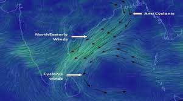

East Coast

Affected regions:
Andhra Pradesh, Odhish, West Bengal
Recent disaster
Name : Asani
Date : May 7, 2022
Preparations : The Government of India's Union Home Secretary Ajay Kumar Bhalla had reviewed prepared for
the
cyclone deployed nine team and keep seven team in Andhra Pradesh, and Odisha by the National Disaster Response
Force (NDRF) and additional team also have been readied. The IMD issued the cyclone's warnings over
Andhra Pradesh. In West Bengal, Kolkata Municipal Corporation prepared their teams to start work immediately
after the damage by the cyclone.
Damage: About 30,225 estimate crops were affected.
Deaths: Three fatalities were confirmed from the cyclone as of May 19.